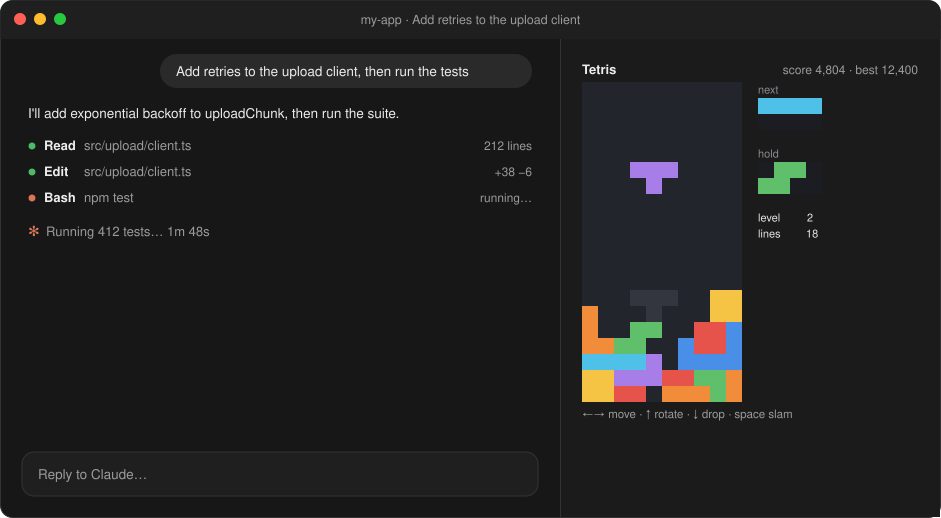
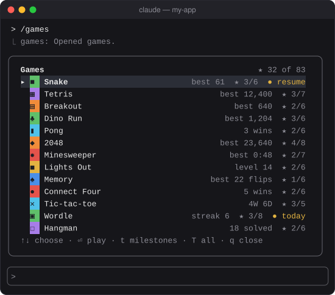

Thirteen games you already know
Nothing to learn: arrow keys or the mouse, one line of score above the board, one line of controls below it, and nothing else. /games snake goes straight to a game.
A mod for Claude Code
Type /games and a pane opens beside the conversation with thirteen games you already know: Tetris, Snake, Wordle, 2048, Minesweeper and more. Milestones to chase, your bests saved, and the game pauses itself when Claude's done.


Claude is running the test suite again. You could watch the spinner, or you could clear four lines in Tetris. games is for the minute in between.
Nothing to learn: arrow keys or the mouse, one line of score above the board, one line of controls below it, and nothing else. /games snake goes straight to a game.
Typing in the prompt, or Claude starting or finishing a turn, pauses an arcade game, and a toast says when Claude is done. /games works mid-turn, so you never wait to start.
Small goals across the games, from "eat once" to "beat Connect Four on Hard three times in a row". A toast when you get one, and each shows how close you are: "12 of 25".
Bests, streaks, milestones and the game you left halfway are kept between sessions. Arcade games come back paused, right where you left them, and two sessions playing at once add up instead of overwriting.
One puzzle a day, the same all day, with a daily streak, and practice games as many as you like. Hard mode and high contrast colors are one setting away.
Nothing is sent anywhere and no game calls a model, so playing costs you no usage. Your progress lives in Claude Code's own store for the plugin.
Each one fits the pane: in the desktop app beside the conversation, in the terminal in the strip above the prompt, with smaller tiles where it has to.
![Six of the games as the pane draws them. Tetris: a stack with a gap and a T piece above its ghost. 2048: a 2048 tile made, scoring 23,640. Wordle: today's puzzle, ARISE and CRAMP tried, A and R yellow then C, R and A green, CRA typed on the third row, the keyboard colored below. Snake: fifteen long, food ahead. Minesweeper: an easy board half open, numbers in color, two flags placed, 41 seconds in. Connect Four: red has four on a diagonal against the Normal bot, and the line under the board says You win! with r: again and h: hub.](../assets/games/preview-games.svg)
c4, ttt, mines.In a Claude Code terminal session, type this at the prompt:
/plugin install games --marketplace aseem-upadhyay/qol-mods
Answer y to add the marketplace, then pick the user scope so games loads in every session.
Type /games. Next time Claude settles in for a long turn, you'll know what to do.
Plays in the desktop app's Code tab and in a terminal; nothing else to install. The mobile app and the VS Code extension show your stats but can't draw the board yet.